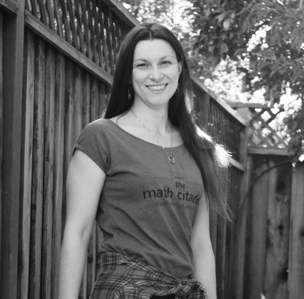
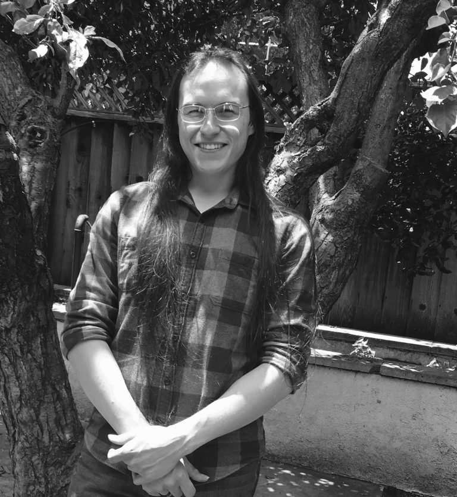
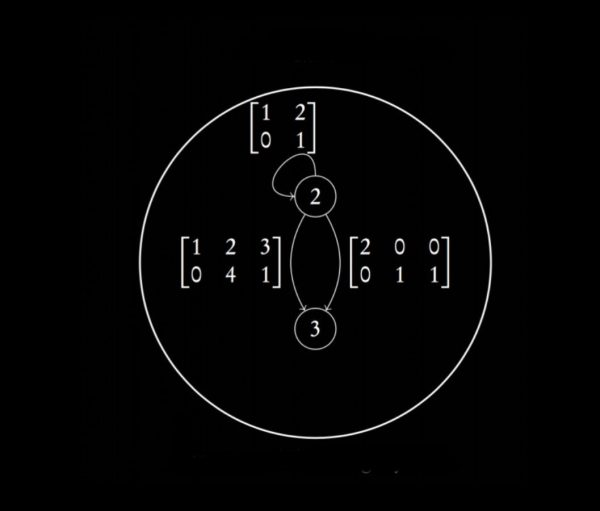

|
 |
Cassandra Traylor
- Ph.D. Mathematics, University of Texas at Arlington, 2016
- M.S. Statistics, Georgia Institute of Technology, 2013
- B.S. Applied Mathematics, Georgia Institute of Technology, 2011
Cassandra Traylor is the founder and lead mathematician at the Math Citadel. She was a Senior Research Scientist in Mathematics and Analytics for Dell EMC, producing 6 patents during her 2 year tenure. She has also worked for Lockheed Martin Aeronautics as a DBA and quality control analyst. Her academic experience includes working as an instructor at 4 different institutions throughout the US, as well as pure and applied mathematics research focusing on probability theory, queueing, and reliability theory. She has given numerous lectures, webinars, seminars, and conference talks across the country in both academic settings and industrial conferences. Beyond her experience in the technology, aerospace, and manufacturing sectors, she has university training and background in logistics, operations research, and chemistry. For more information, visit her page.
|
|

|
Jason Hathcock
- B.S. Mathematics, Minor Chemistry, University of Texas at Arlington,
2013
Jason Hathcock studied mathematics and chemistry at the University of Texas
at Arlington, receiving an Honors B.S. in Mathematics with a minor in
Chemistry. He continued to study mathematics under Dr. Andrzej Korzeniowski
at the graduate level, with an emphasis in applied probability. He produces
the photographs, and musical numbers for the videos of the Research Cortex,
and assists Dr. Traylor in her research endeavors.
His hobbies include composition for the guitar, beautiful typesetting, and
quietly critiquing film.
|
|  |
Matt Kukla
- B.S Mathematics, University of Maryland, 2022
Matt Kukla is a recent graduate of the University of Maryland.
His primary research interests revolve around category theory,
formal logic, and algebraic topology, along with applications of these to
problems in various fields. |